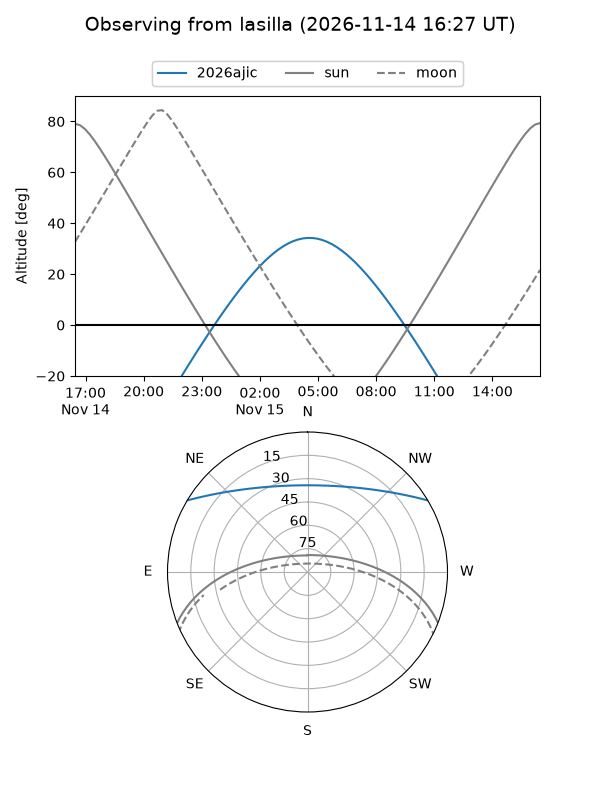
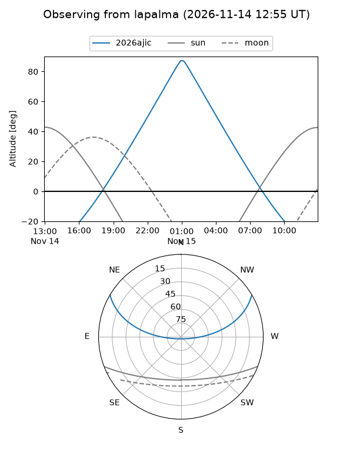
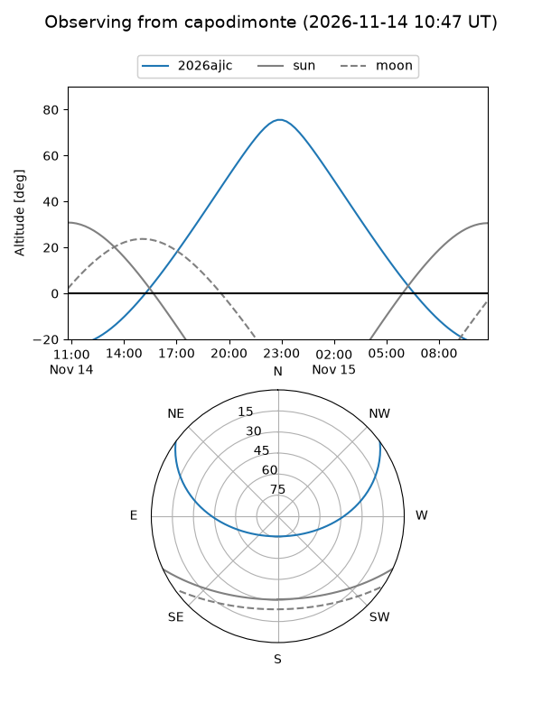
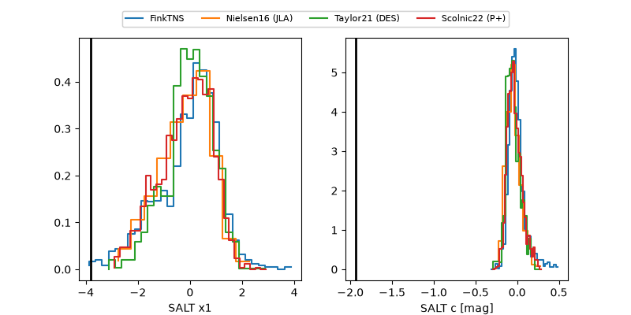

2026ajic
Target 2026ajic at 2026-11-14 11:21
Aliases and brokers:
FINK-ZTF: ztf.fink-portal.org/ZTF26acgwjgr
Lasair-ZTF: lasair-ztf.lsst.ac.uk/objects/ZTF26acgwjgr
ALeRCE-ZTF: alerce.online/object/ZTF26acgwjgr
YSE-PZ: ziggy.ucolick.org/yse/transient_detail/2026ajic
TNS name: wis-tns.org/object/2026ajic
Direct TNS query: direct search
alt names
ZTF26acgwjgr (ztf,fink_ztf)
2026ajic (tns,yse)
Coordinates:
equatorial (ra, dec) = 51.4470,+26.39163
equatorial (HMS+DMS) = 03:25:47.28,+26:23:29.85
galactic (l, b) = (160.9409,-24.86450)
Flags:
likely cv: !!
CV pen: 3.892081756801193e-06
peak dt: +30.6
Photometry:
last atlasc=19.20, atlaso=17.91, ztfg=20.14, ztfr=19.85
1 atlasc, 1 atlaso, 3 ztfg, 1 ztfr detections
Lightcurve
Visibility



Additional plots
